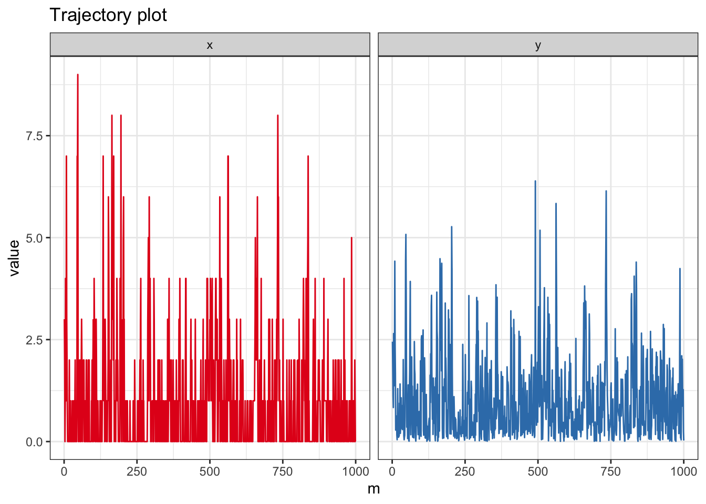

ギブスサンプリング
Exercise 5.1 実数\(\theta, q_0, q_1\)は\(0<\theta, q_0, q_1<1\)を満たすとする．
\(P_0=\mathcal{B}(1,q_0), P_1=\mathcal{B}(1,q_1)\)とするとき，混合分布\(P_\theta\)をベルヌーイ分布を用いて表わせ．
Solution. \(P_\theta=\mathcal{B}(1,(1-\theta) q_0+\theta q_1)\).
Exercise 5.2 定理5.2を特性関数を用いて示せ．なお，\(\sigma_0, \sigma_1\)は存在するものとする．
Solution. \(\varphi_0, \varphi_1\)をそれぞれ\(P_0, P_1\)の特性関数とする．このとき，\(P_\theta\)の特性関数は
\[
\varphi_\theta=(1-\theta)\varphi_0+\theta\varphi_1
\]
となる．平均は\(\mu_\theta=\varphi_\theta'(0)\)であり，分散は\(\sigma_\theta^2=-\varphi_\theta''(0)-(\varphi_\theta'(0))^2\)で表される．この事実より，
\[\begin{align*}
\mu_\theta &=\varphi_\theta'(0)\\
&=(1-\theta)\varphi_0'(0)+\theta\varphi_1'(0)\\
&=(1-\theta)\mu_0+\theta\mu_1.
\end{align*}\]
また，\(i=0,1\)について
\[
\varphi_i''(0)=-\sigma_i^2-(\varphi_i'(0))^2
\]
より
\[\begin{align*}
\sigma_\theta^2 &=-\varphi_\theta''(0)-(\varphi_\theta'(0))^2\\
&=-\left((1-\theta)\varphi_0''(0)+\theta\varphi_1''(0)\right)-\left((1-\theta)\varphi_0'(0)+\theta\varphi_1'(0)\right)^2\\
&=-\left((1-\theta)(-\sigma_0^2-\mu_0^2)+\theta(-\sigma_1^2-\mu_1^2)\right)-((1-\theta)\mu_0+\theta\mu_1)^2
\end{align*}\]
となり，これを整理することで示せる．
Exercise 5.3 条件つき確率(5.1),
(5.2)を導出せよ．
Solution. \(x_n, I_n\)の\(\theta\)のもとでの結合分布の密度関数は
\[
p(x_n, I_n=i|\theta)=
\begin{cases}
\theta p_1(x_n)&\mathrm{if}\ i=1\\
(1-\theta) p_0(x_n)&\mathrm{if}\ i=0
\end{cases}
\]
である．したがって，
情報\(I^N\)があるばあいの尤度は
\[\begin{align*}
p(x^N, I^N|\theta)=\prod_{n=1}^N(\theta p_1(x_n))^{I_n}((1-\theta) p_0(x_n))^{1-I_n}
\end{align*}\]
となる．事後分布の導出に，\(\theta\)を含まない項を除くと
\[\begin{align*}
p(x^N, I^N|\theta)\propto \prod_{n=1}^N \theta^{I_n}(1-\theta)^{1-I_n}=\theta^{m_1}(1-\theta_0)^{m_0}
\end{align*}\]
となる．よって，事前分布を\(p(\theta)=1\)として入れると，事後密度関数は
\[\begin{align*}
p(\theta|x^N, I^N)\propto p(x^N, I^N|\theta)p(\theta)\propto\theta^{m_1}(1-\theta_0)^{m_0}
\end{align*}\]
となり，これはベータ分布\(\mathcal{B}(m_0+1,m_1+1)\)の確率密度関数の形である．したがって
\(I^N\)の情報もあるときの事後分布はベータ分布\(\mathcal{B}e(m_0+1,m_1+1)\)である.
いっぽう，
\(I_n\)の条件付き確率は先程の結合分布から
\[
\mathbb{P}(I_n=1|x_n,\theta)=\frac{p(x_n, I_n=1|\theta)}{p(x_n|\theta)}=\frac{\theta p_1(x_n)}{\theta p_1(x_n)+(1-\theta) p_0(x_n)}
\]
を得る．またこの値を
\(1\)から引くことにより
\(\mathbb{P}(I_n=0|x_n,\theta)\)もわかる．
Exercise 5.4 \(N, n\)を正の整数，\(\theta\)を実数で
\(1\le n\le N, 0<\theta<1\)とする．また\(x_1,\ldots, x_N\)は実数，\(I_1,\ldots, I_N\)は\(0\)もしくは\(1\)とする．このとき，
条件つき確率(5.1),
(5.2)のもと，
\(\mathbb{E}[~\theta~|x^N, I^N], \mathbb{E}[~I_n~|x^N,\theta]\)を求めよ．
Solution. ベータ分布の性質から
\[
\mathbb{E}[~\theta~|x^N, I^N]=\frac{m_1+1}{(m_0+1)+(m_1+1)}=\frac{m_1+1}{N+2}.
\]
いっぽう，
\[
\mathbb{E}[~I_n~|x^N,\theta]=\mathbb{P}(I_n=1|x_n,\theta)=\frac{\theta p_1(x_n)}{\theta p_1(x_n)+(1-\theta) p_0(x_n)}.
\]
Exercise 5.5 定理5.3を示せ．
Solution. 略．
Exercise 5.6 実数\(\mu\)に対し，\(X\sim\mathcal{N}^+(\mu,1)\)のとき，\(\mathbb{E}[X]\)を求めよ．
Solution. 仮定から
\[\begin{align*}
\mathbb{E}[X]&=\frac{\int_0^\infty x\phi(x-\mu)\mathrm{d}x}{\Phi(\mu)}\\
&=\mu+\frac{\int_0^\infty (x-\mu)\phi(x-\mu)\mathrm{d}x}{\Phi(\mu)}\\
&=\mu+\frac{\left[\phi(x-\mu)\right]_0^\infty}{\Phi(\mu)}\\
&=\mu+\frac{\phi(-\mu)}{\Phi(\mu)}=\mu+\frac{\phi(\mu)}{\Phi(\mu)}
\end{align*}\]
を得る．
Exercise 5.7 例5.1で定義されるマルコフカーネルについて，\(\mathcal{N}(0,1)\)が不変分布であることを示せ．
Solution. \(X\sim \mathcal{N}(0,1)\)かつ\(Y\sim \mathcal{N}(\rho^2X,1-\rho^4)\)としたとき，
\(Y\sim \mathcal{N}(0,1)\)であることを示せば良い．正規分布の再生性を使って示そう．
\(\epsilon_1, \epsilon_2\)は独立な標準正規乱数とする．すると上で定義される\(X,Y\)の同時分布と
\[
X=\epsilon_1, Y=\rho^2\epsilon_1+\sqrt{1-\rho^4}\epsilon_2
\]
とおいたときの\(X,Y\)の同時分布はおなじになる．後者であれば再生性からただちに\(Y\sim \mathcal{N}(0,1)\)が得られる．よって\(\mathcal{N}(0,1)\)は不変分布，
Exercise 5.8 \(x\)は正の整数，\(y\)は正の実数とする．\(X\)は\(Y=y\)で条件づけたもと，\(\mathcal{P}(y)\)に従う．また\(Y\)は\(\mathcal{E}(1)\)に従う．このとき\(Y\)の\(X=x\)を固定したもとでの条件つき分布を導出し，ギブスサンプリングを構成せよ．
Solution. \(X, Y\)の同時密度関数が
\[
p(x, y)=p(x|y)p(y)=\left\{\frac{y^x}{x!}\exp(-y)\right\}\exp(-y)
\]
となる．したがって\(Y\)の\(X=x\)を固定したもとでの条件つき分布の確率密度関数は
\[
p(y|x)\propto p(x,y)\propto y^x\exp(-2y)
\]
となる．これはガンマ分布\(\mathcal{G}(x+1,2)\)の確率密度関数だから，条件付き分布は\(\mathcal{G}(x+1,-2)\)である．実際にプログラムしてみよう．
N <- 1e3 # No. of iteration
N1 <- 1e3 # No. of iteration for trajectory plot
lag <- 25 # Lag of MCMCs
vecx <- numeric(N) # Output #1
vecy <- numeric(N) # Output #2
x0 <- rpois(1,1) # Initial value
# Gibbs Sampler
x <- x0
for(i in 1:N){
y <- rgamma(1,shape = x+1, rate = 2)
x <- rpois(1,y)
vecx[i] <- x
vecy[i] <- y
}
data.fr <- melt(data.frame(x = c(vecx, vecy), m = rep(1:N,2), xy = factor(rep(c("x","y"),each=N))), id =c("m","xy"))
ggplot(data.fr, aes(x = m, y = value, color = xy)) + geom_path(show.legend = FALSE) + theme_bw() + facet_grid( . ~ xy)+ scale_color_brewer(palette = "Set1") + ggtitle("Trajectory plot")

Exercise 5.9 例5.2で定義されるギブスカーネル\(P(x,\cdot)\)が負の超幾何分布
\(\mathcal{N}hg(2N+\alpha+\beta-1, N, x+\alpha)\)
であることを示せ．
Solution. \(P(x,\cdot)\)の確率関数を\(p(x,y)\)と書くと
\[\begin{align*}
p(x,y)&=\int_0^1\binom{N}{y}z^y(1-z)^{N-y}\frac{z^{x+\alpha-1}(1-z)^{N-x+\beta-1}}{B(x+\alpha, N-x+\beta)}\mathrm{d}z
\end{align*}\]
となる．ベータ関数の定義から，これは
\[\begin{align*}
p(x,y)&=\binom{N}{y}\frac{B(x+y+\alpha,2N-x-y+\beta)}{B(x+\alpha, N-x+\beta)}
\end{align*}\]
となる．負の二項分布と見比べるために，さらに右辺を書き直すと，
\[\begin{align*}
p(x,y)&=\frac{N!}{y!(N-y)!}\frac{(x+y+\alpha-1)!(2N-x-y+\beta-1)!}{(2N+\alpha+\beta-1)!}\frac{(N+\alpha+\beta-1)!}{(x+\alpha-1)!(N-x+\beta-1)!}\\
&=\frac{N!}{y!(N-y)!}\frac{(x+y+\alpha-1)!(2N-x-y+\beta-1)!}{(2N+\alpha+\beta-1)!}\frac{(N+\alpha+\beta-1)!}{(x+\alpha-1)!(N-x+\beta-1)!}\\
&=\frac{\binom{y+(x+\alpha)-1}{y}\binom{(2N+\alpha+\beta-1)-(x+\alpha)-y}{N-y}}{\binom{2N+\alpha+\beta-1}{N}}
\end{align*}\]
となり，\(\mathcal{N}hg(2N+\alpha+\beta-1, N, x+\alpha)\)の確率関数と一致する．
Exercise 5.10 練習問題1.8
を参考に，
第5.1節の有限混合モデルのギブスサンプラーの拡張を考える．
\(K\)は正の整数，\(\theta_1,\ldots, \theta_{K-1}\)は正の実数で，
\[
\sum_{k=1}^{K-1}\theta_k<1
\]
を満たすとする．また，\(P_1,\ldots, P_K\)は確率分布で，確率密度関数\(p_1,\ldots, p_K\)を持つ．確率分布\(P_\theta\)は，確率密度関数
\[
p_\theta(x)=\theta_1 p_1(x)+\cdots+\theta_Kp_K(x)
\]
を持つとする．ただし，\(\theta_K=1-\theta_1-\cdots-\theta_K\)とする．ある正の整数\(N\)にたいし観測\(x_1,\ldots, x_N|\theta\sim P_\theta\)となり，\(\theta\sim\mathcal{D}(\alpha_1,\ldots,\alpha_K)\)なる事前分布を入れる．このとき，ギブスサンプリングを構成せよ．なお，\(\alpha_1,\ldots,\alpha_K\)は既知の正の実数とする．
Solution. \(K=2\)の場合と同様に，\(I_n=k, n=1,\ldots\)が，のとき，分布\(P_k\)からの乱数であることを明示する確率変数としよう．すると，
\(I^N=\{I_1,\ldots, I_N\}\)のもと，尤度は
\[
p(x^N, I^N|\theta)\propto \prod_{k=1}^K \theta_k^{m_k}
\]
となる．ただし，\(m_k=\sum_{n=1}^N1_{\{I_n=k\}}\)とする．したがって事前分布として
\(\mathcal{D}(\alpha_1,\ldots,\alpha_K)\)を入れると，事後密度関数は
\[
p(\theta|x^N, I^N)\propto p(x^N, I^N|\theta)p(\theta)\propto \prod_{k=1}^K \theta_k^{m_k+\alpha_k-1}
\]
となり，これは\(\mathcal{D}(m_1+\alpha_1,\ldots,m_K+\alpha_K)\)の確率密度関数である．したがって
\(\theta\)の\(I^N\)も既知としたときの事後分布は\(\mathcal{D}(m_1+\alpha_1,\ldots,m_K+\alpha_K)\)である．
一方，\(\theta, x^N\)のもとでの\(I_n\)の事後分布は多項分布
\[
\mathbb{P}(I_n=k|x_n,\theta)=\frac{\theta_k p_k(x_n)}{\sum_{l=1}^K\theta_l p_l(x_n)}\ (k=1,\ldots, K, n=1,\ldots, N)
\]
となる．したがってギブスサンプリングは
\(\mathcal{D}(m_1+\alpha_1,\ldots,m_K+\alpha_K)\)と，うえの\(I_n\)の条件付き分布である多項分布を交互に繰り返すことで構成できる．